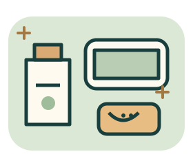

🧴 皮膚屏障
異位性皮膚炎：溫水短洗、輕柔清潔、洗後趁微濕保濕。無香料不等於人人適用，新產品先小範圍試用。
CARE, NOT CURE-ALL
皮膚要保濕，鼻子要找誘因。
需要求救時，不靠忍耐通關。

不限時、沒有音效要求。先選再確認，答錯能重練；首次結果不會被覆蓋。
TAKE ONE GOOD HABIT HOME
這是知識練習紀錄，不代表健康狀態或照護能力認證。點開任一題，回顧首次選擇與解析。
異位性皮膚炎：溫水短洗、輕柔清潔、洗後趁微濕保濕。無香料不等於人人適用，新產品先小範圍試用。
依已確認的誘因調整。塵蟎防線不只一件用品；處理潮濕與漏水。短毛寵物也不保證低敏。
接觸可能過敏原後出現呼吸困難、喉嚨緊或昏厥，立即119；若有開立腎上腺素，依緊急計畫使用。改善後仍需醫療評估。
依下列公開衛教整理，核對日期2026-11-04。題目為原創虛構情境，不引用個人病史，也非機構官方測驗。海外衛教的求救號碼已依台灣情境改為119；實際照護需依個人醫療計畫。
來源連結會開新分頁，不包含你的作答。沿用本網站純前端架構，不新增套件、追蹤或外部服務。